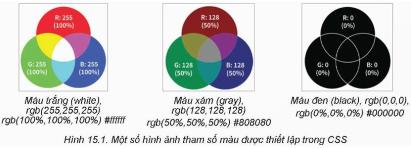
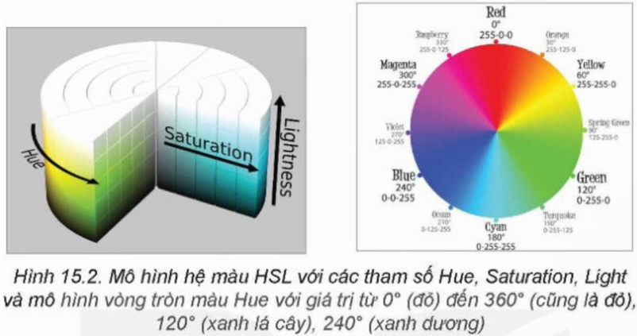
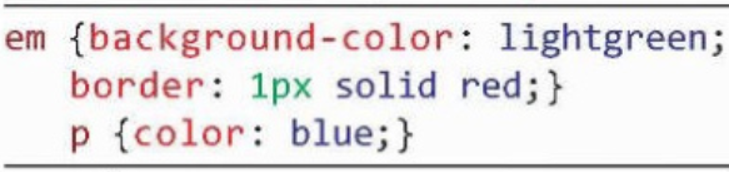
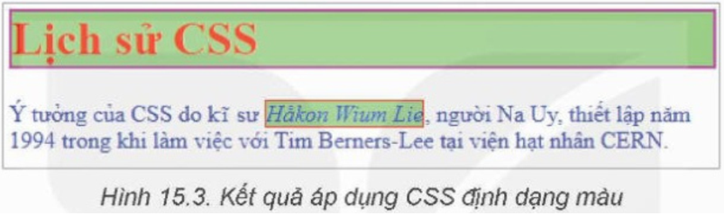
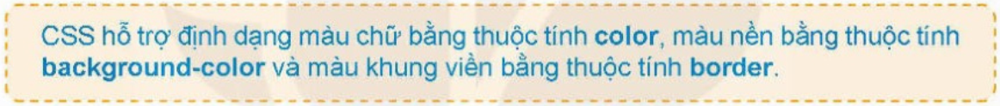
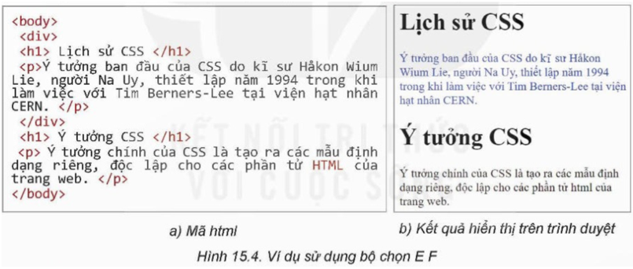
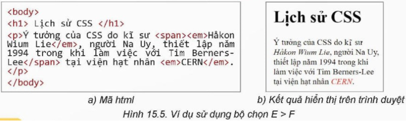
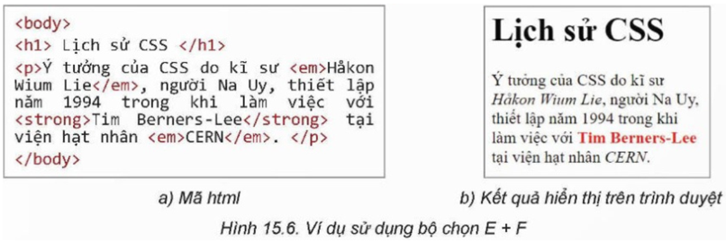
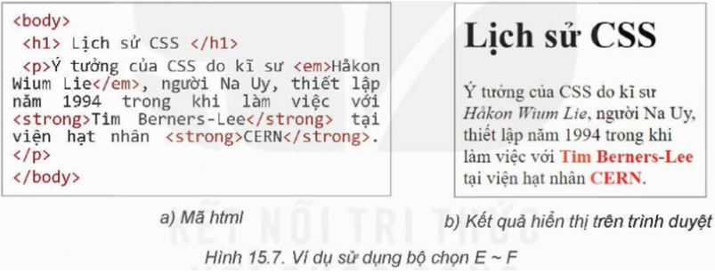
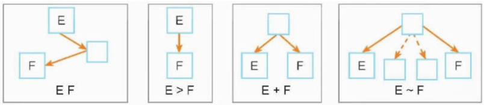

1.HỆ THỐNG MÀU CỦA CSS
a.Màu RGB
HTML và CSS hỗ trợ hệ màu theo mẫu RGB (R-red, G-green, B-blue). Mỗi màu là một tổ hợp gồm ba giá trị (r, g, b), trong đó mỗi giá trị này là số nguyên nằm trong khoảng từ 0 đến 255, tức là một số 8 bit. Tổng số màu cho phép là 28 x 28 x 28 = 224 = 16.777.216 màu.
Mỗi giá trị màu được thiết lập bởi một trong các cách sau:
• rgb(x-red, x-green, x-blue), trong đó x-red, x-green, x-blue có thể nhận các giá trị độc lập từ 0 đến 255.
• rgb(x-red%, x-green%, x-blue%), trong đó các tham số biểu thị phần trăm của 255.
• #rrggbb, trong đó rr, gg, bb là giá trị trong hệ đếm hexa (hệ đếm cơ số 16).
b. Hệ màu HSL
Một hệ màu khác mà HTML và CSS hỗ trợ là HSL (Hue, Saturation, Lightness). H (Hue) là vòng tròn màu với giá trị từ 0 đến 360. S (Saturation) chỉ độ bão hòa hay độ đậm đặc của màu với giá trị từ 0% đến 100%. Màu sẽ biến mất chỉ còn xám khi độ bão hòa bằng 0%. Ngược lại, màu sẽ đầy đủ nếu độ bão hòa bằng 100%. L (Lightness) là độ sáng với giá trị từ 0% đến 100%. Với 0% chỉ mức độ sáng thấp nhất, màu đen. Với 100% độ sáng là lớn nhất, màu sẽ trắng. Như vậy, đặt lightness = 50% để có màu đúng.
c. Các tên màu có sẵn trong CSS
Bên cạnh việc thiết lập màu bằng các hàm rgb() và hsl(), CSS còn thiết lập sẵn các tên màu để dễ dàng cho việc sử dụng.
Phiên bản CSS2 thiết lập tên 16 màu chuẩn. Tên màu không phân biệt chữ hoa chữ thường.
Ví dụ một số tên màu có sẵn: black, gray, white, green, orange, yellow, purple, blue, lime,…
Phiên bản CSS3 đã thiết lập 140 tên màu.
Lưu ý: Các màu xám hay đen trắng có thể được thiết lập theo các cách sau:
- rgb(x,x,x) với các tham số rgb bằng nhau.
- hsl(h,0%,x%) khi tham số saturation bằng 0%.
Các phần tử HTML của trang web có thể được tô màu bằng các thuộc tính sau:
• Thuộc tính color dùng định dạng màu chữ (màu nổi).
• Thuộc tính background-color dùng để định dạng màu nền.
• Thuộc tính border dùng để định dạng màu khung viền quanh phần tử.
Ví dụ:
• Trong mẫu CSS sau, phần tử h1 được định dạng màu chữ, màu nền và màu của khung viền:
• Trong mẫu CSS sau, định dạng khung viền, màu nền cho phần tử em, định dạng màu chữ cho phần tử p:
Kết quả áp dụng 2 CSS trên có thể như hình 15.3.
 Lưu ý: Các thuộc tính định dạng màu chữ và màu nền đều có tính kế thừa, riêng thuộc tính border không có tính kế thừa.
2. Thiết lập bộ chọn là tổ hợp các phần tử có quan hệ
Từ trước đến nay chúng ta chỉ xem xét các mẫu định dạng CSS với bộ chọn là các phần tử độc lập, riêng biệt. Trong hoạt động này,
chúng ta sẽ tìm hiểu các mẫu định dạng với bộ chọn là các phần tử có liên quan đến nhau. Các định dạng này có rất nhiều ứng dụng trên thực tế.
Các định dạng này có thể hiểu là được áp dụng trên các phần tử với điều kiện nhất định.
Bảng 15.1 mô tả chi tiết, ý nghĩa và ví dụ áp dụng cho các trường hợp định dạng CSS có dạng là tổ hợp các phần tử có quan hệ với nhau:

Sau đây là một số ví dụ minh họa cho các trường hợp của Bảng 15.1.
a. Ví dụ minh họa cho trường hợp E F
Với định dạng div p {color : blue;} áp dụng cho trang HTML sau, ta thấy đoạn văn bản đầu tiên là phần tử con của div, đoạn thứ hai là phần tử con của body, do vậy mẫu định dạng trên chỉ áp dụng cho phần tử p đầu tiên (Hình 15.4).
b. Ví dụ minh họa cho trường hợp E > F
Giả sử định dạng p > em {color : red;} áp dụng cho văn bản sau. Trong đoạn văn bản này có hai phần tử em, nhưng chỉ phần tử em thứ hai là con trực tiếp của p, do đó định dạng trên chỉ áp dụng cho phần tử em thứ hai (Hình 15.5).
c. Ví dụ minh họa cho trường hợp E + F
Xác định dạng em + strong {color : red;}. Trong văn bản sau có một phần tử strong liền kề với phần tử em và cả hai đều là con trực tiếp của p, do đó mẫu định dạng trên sẽ áp dụng cho phần tử strong (Hình 15.6).
d. Ví dụ minh họa cho trường hợp E ~ F
Với định dạng em ~ strong{color : red;}, văn bản sau có hai phần tử strong đều nằm phía sau của phần tử em, do đó mẫu định dạng trên sẽ áp dụng cho cả hai phần tử strong (Hình 15.7).
Quan hệ E, F trong các trường hợp trên có thể mô tả như trong các sơ đồ sau:
